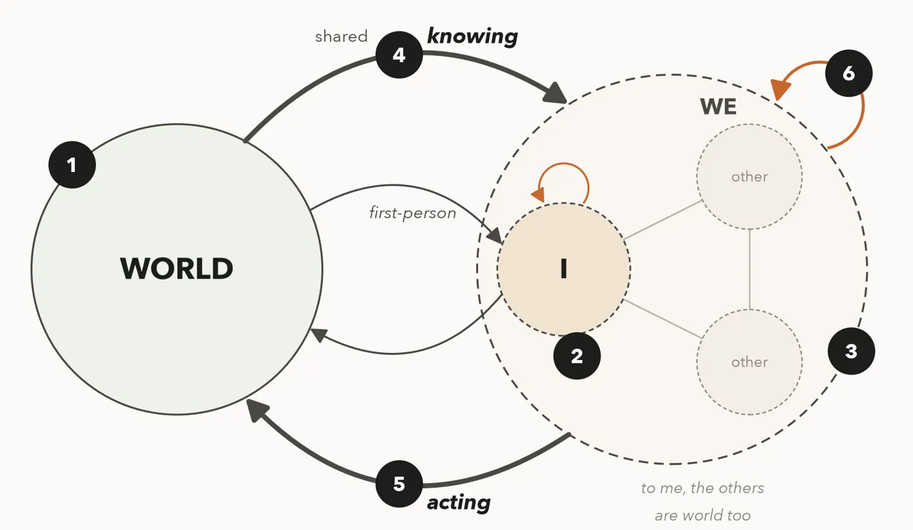
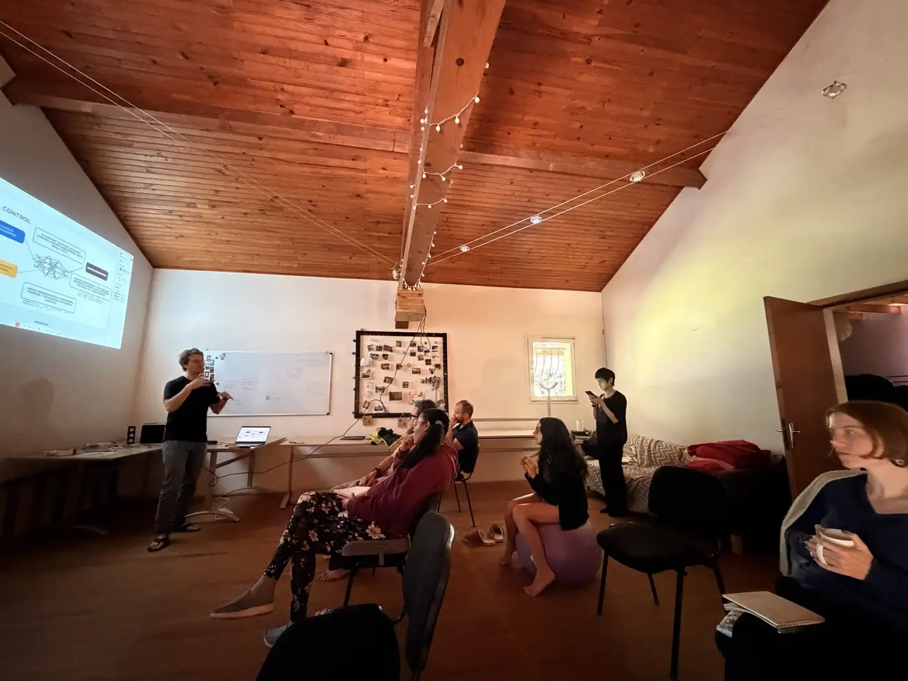
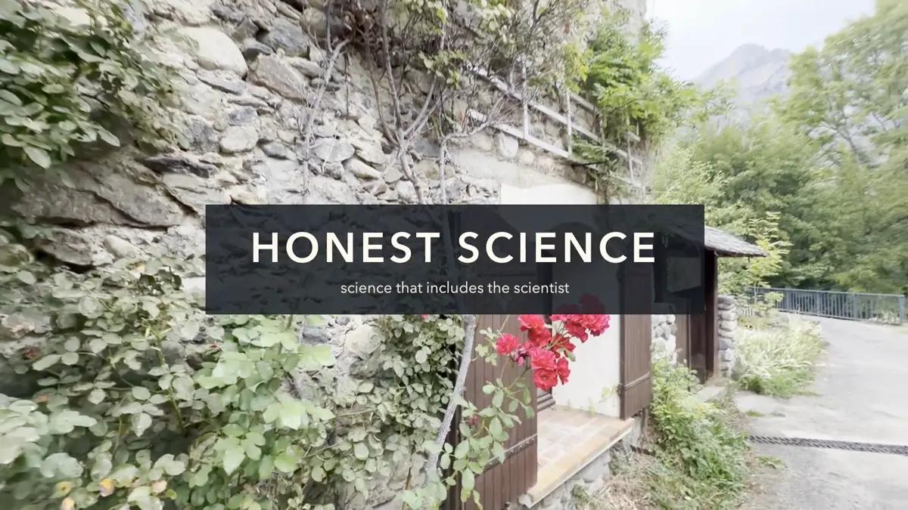
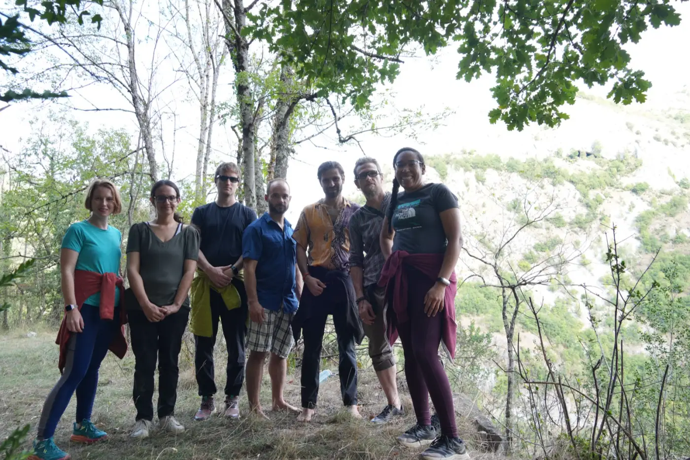
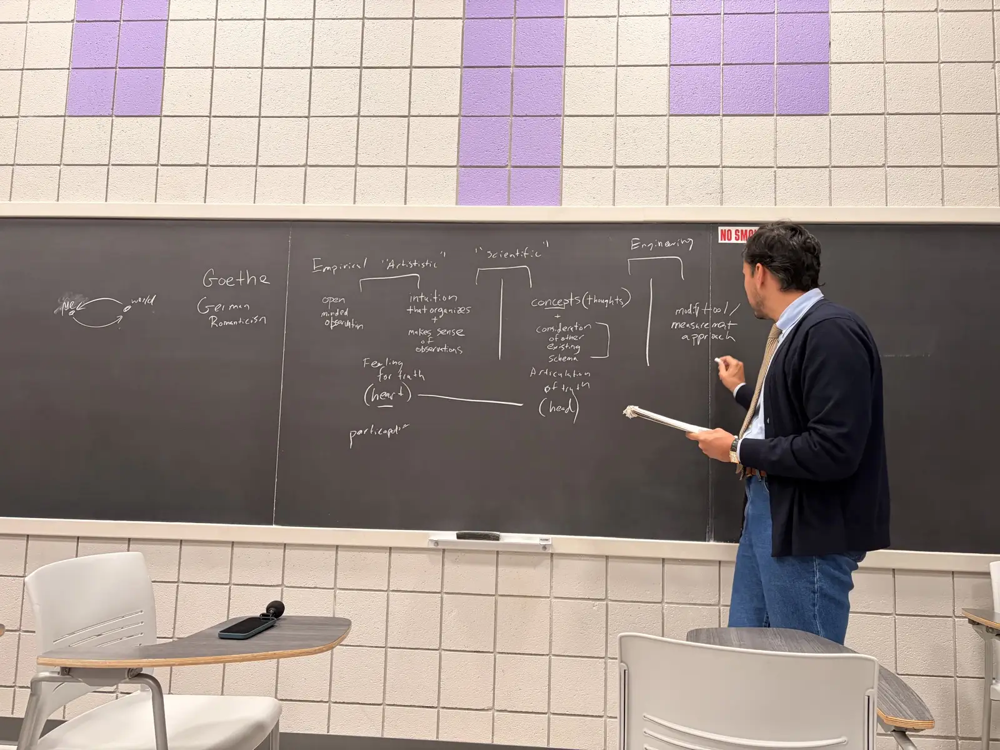
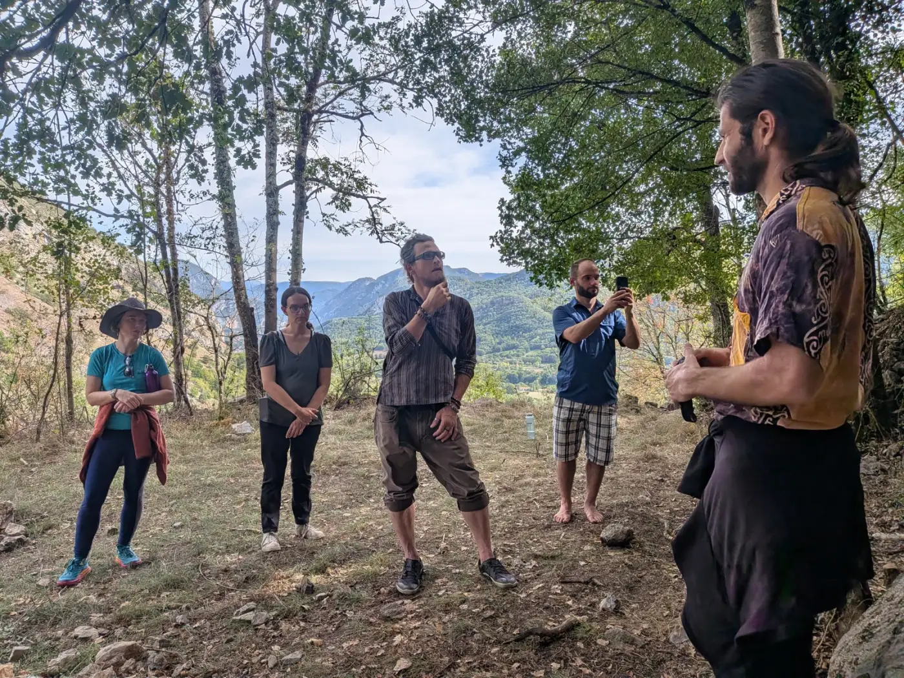
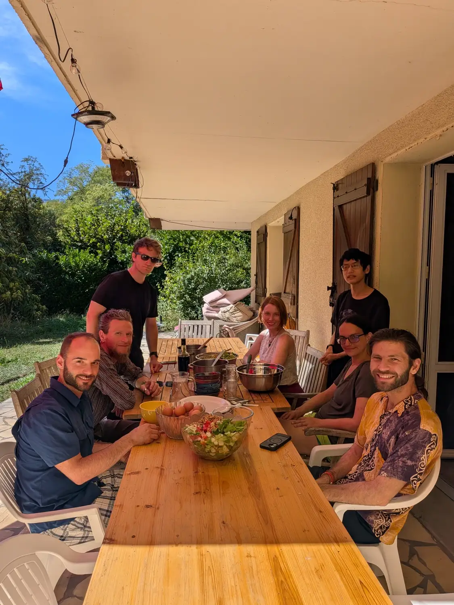
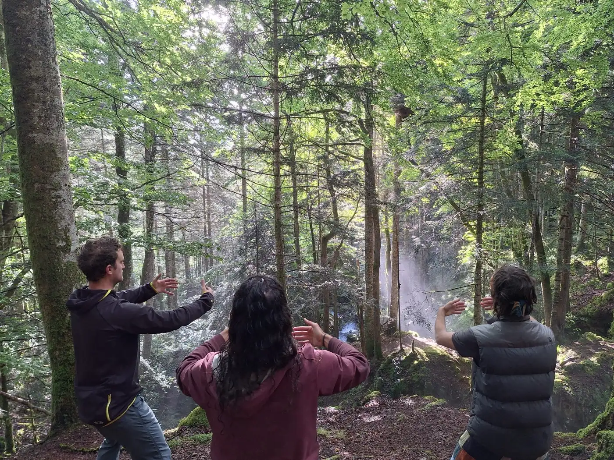
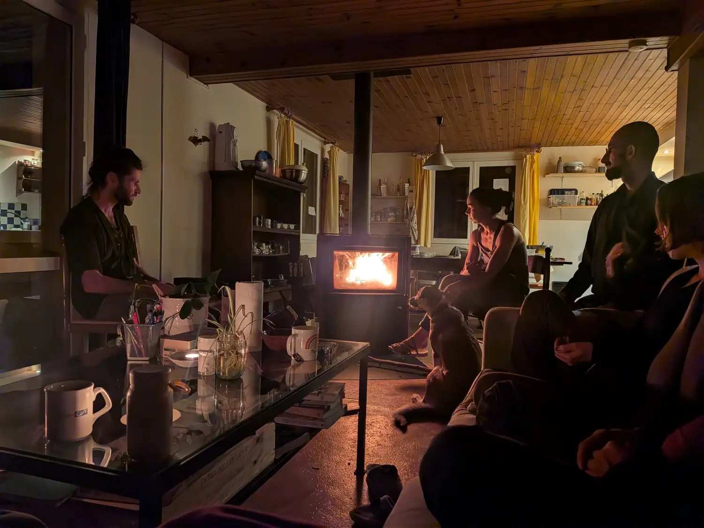

Science studies the world. We also study the one looking.
Complexity science helps us understand what contemplatives explore: what a ‘self’ is, and how attention shapes what we see. Contemplative practice helps us transform how science itself is done.
Some past speakersMichael Levin TuftsNeil Theise NYUGary Lupyan UW-MadisonAdam Safron TuftsChaitanya Gokhale WürzburgAlan Rodrigues RockefellerMarc Santolini Learning Planet Institute
AdvisorsJohn Dunne UW-MadisonFrancis Heylighen VUB
OrganizersPavel Chvykov IGDOREMatthew McCarthy VUBMatthieu Barbier INTPRobert Marsland Pontifical University of the Holy Cross
What we do
Contemplative traditions suggest the hypotheses. Complexity science looks for the mechanisms. Our gatherings keep us honest by making us practice what we study.

How life knows itself
Contemplative science has many experiments and little theory. We work on it: Bayesian models of meditation, the agency of collective imaginaries, the relational construction of reality.
Research directions →
Meetings for better questions
Retreats in the Pyrenees, conference sessions, a monthly call. We design how we meet as carefully as what we discuss, with silence, movement and honest talk about how we work.
Upcoming and past →
Trailer · 4 minThings we make
Work Alive, a facilitated co-working practice with its own app. A playbook for running research meetings differently. Recorded talks, essays, and a 4-minute trailer from our retreats.
See what we make →From the room
“The academic system has not really been made in a way where we can help a person with their self. Yet it's the self that's doing the science that then reaches the world.”
“Scientists take on a philosophical position, whether they're aware of it or not.”
“Why don't we do research as we do music together, or as we do sports?”
“This quest for truth is in fact so important that we're going to take that so seriously that we're going to examine if there are other ways in which we can come to truth.”
“Taking an idea that doesn't need to turn into a long-term project… and working with it for 30 minutes… whether it ends up being productive for some long-term goal or not, it's still fruitful.”
“Strive to be able to natively speak at least two fields… that's where you start to understand how you might not be understood.”
“I'm an extrovert. I don't believe how much I enjoyed the quiet.”
“At first I kept thinking of how I look to the world. In the end, it turned out that it was all about how I look to myself.”
People
People and advisors →





About 150 physicists, biologists, cognitive scientists, philosophers and contemplative practitioners, meeting since 2025. The community is run by volunteers and is still young: its shape is being worked out in public.
With INTP, Institut Natura e Teoria en Pirenèus · a satellite of CCS26, the Conference on Complex Systems
Why an ensō?
The brush-drawn circle stands for emptiness. In Buddhist thought, nothing exists on its own: everything arises from relations, which complexity science studies as networks of interaction out of which new order emerges. Drawn in one stroke and left open, the circle is an open system. And it points to silence as where understanding starts. Every theory after that is a model, useful and incomplete.
New to all this? Start with the vision, an animated introduction →Help build the scientific culture we wish existed
- One email a month: calls, gatherings, new talks and writing, research and funding openings
- A monthly call, open to anyone curious
- A forum with a member map